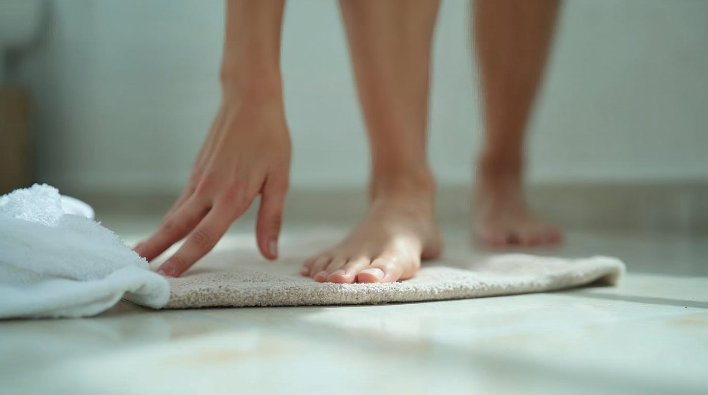
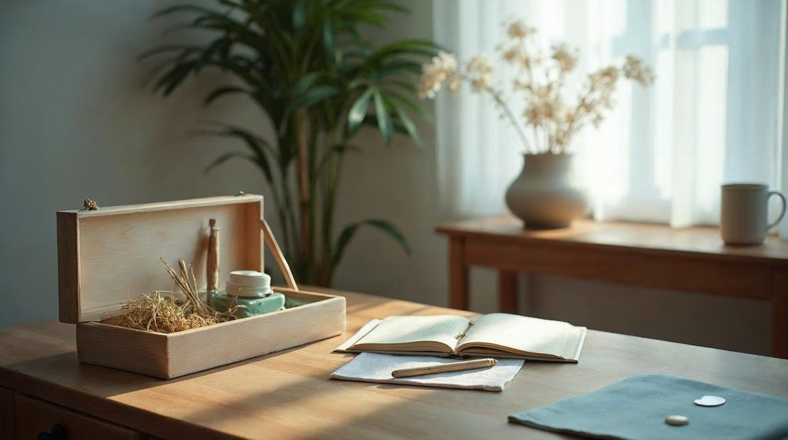
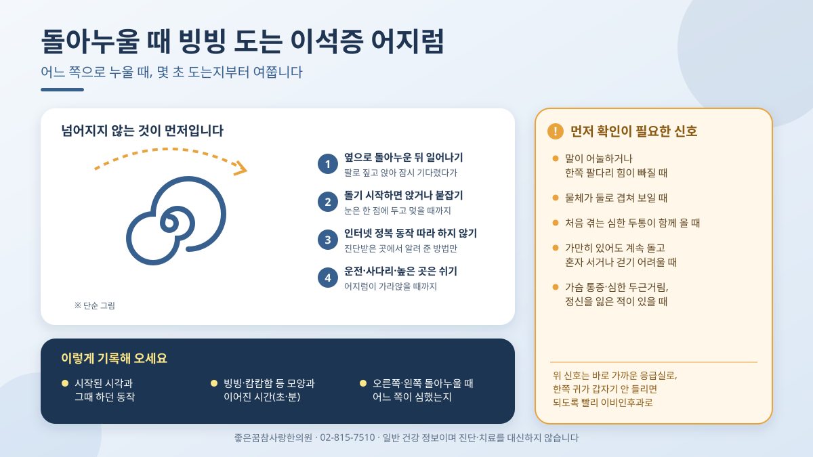

이종호 한의사 감수좋은꿈참사랑한의원 대표원장 (한의사 면허번호 19769)발행 2026-11-26 · 수정 2026-11-26
이 글의 차례
새벽에 화장실에 가려고 몸을 옆으로 돌리는 순간, 천장이 빙글 돕니다. 침대 모서리를 붙잡고 눈을 감은 채 숨을 고르면 삼십 초쯤 지나 멎습니다. 다시 누우려고 머리를 베개에 대자 또 한 번 세상이 돕니다. 아침까지 고개를 한쪽으로만 둔 채 꼼짝 못 하고 누워 있었습니다.
이렇게 눕거나 돌아누울 때, 일어나 앉을 때, 고개를 들어 위를 보거나 숙일 때 짧게 빙빙 돌다가 1분 안쪽으로 멎는 어지럼은 흔히 이석증이라 부르는 양성 돌발성 체위성 현훈을 먼저 생각합니다. 저는 어느 쪽으로 누울 때, 몇 초 동안 도는지부터 여쭙고, 다른 원인의 신호는 없는지를 먼저 확인합니다.
다만 말이 어눌해지거나, 한쪽 팔다리에 힘이 빠지거나, 물체가 둘로 겹쳐 보이거나, 지금까지 없던 심한 두통이 함께 왔다면 이야기가 다릅니다. 가만히 있어도 계속 돌고 혼자 서거나 걷기 어렵다면 그것도 마찬가지입니다. 그때는 이 글을 끝까지 읽기보다 가까운 응급실로 먼저 가셔야 합니다.
진료실에서 이런 말씀을 자주 듣습니다. 세상이 도는 순간에는 이러다 쓰러지는 게 아닌가, 머리에 큰일이 난 게 아닌가 싶어 정말 무서웠다고요. 멎고 나서도 또 올까 봐 고개를 돌리기가 겁난다는 분이 많습니다.
어지럼은 남에게 보이지 않습니다. 겉으로는 멀쩡해 보이니 출근하고, 밥을 짓고, 아이를 챙깁니다. 그러면서 속으로는 언제 또 돌지 몰라 조심조심 하루를 보내셨을 겁니다. 그 긴장이 얼마나 지치게 하는지 압니다.
왜 고개를 움직일 때만 빙빙 돌까요
귀 깊은 곳 속귀에는 몸의 기울기와 회전을 느끼는 기관이 있습니다. 그중 한 곳에는 이석이라고 부르는 아주 작은 돌가루 같은 결정이 붙어 있어, 머리가 기울어지는 것을 알려 줍니다.
이 이석 일부가 제자리에서 떨어져 나와 회전을 느끼는 반고리관으로 굴러 들어가면 문제가 생깁니다. 머리를 특정 방향으로 움직일 때마다 떨어진 이석이 관 속을 굴러가며 액체를 흔들고, 뇌는 실제로는 돌지 않는데도 크게 돌고 있다고 받아들이게 됩니다.
그래서 이석증의 어지럼은 머리 위치를 바꿀 때 시작되고, 이석이 굴러가 멈추면 몇 초에서 1분 안쪽으로 멎는 경우가 많습니다. 같은 자세로 가만히 있으면 멎고, 다시 그 방향으로 움직이면 또 도는 것도 그래서입니다.
나이가 들면서, 머리를 부딪친 뒤, 오래 누워 지낸 뒤에 생기기 쉬운 것으로 알려져 있습니다. 특별한 이유 없이 생기는 경우도 많습니다. 한 번 지나간 뒤 몇 달이나 몇 년 뒤 다시 찾아오는 분도 적지 않습니다.
돌 때 속이 메스껍고 토할 것 같은 것은 흔한 일입니다. 다만 귀가 먹먹하거나 소리가 잘 안 들리는 것은 이석증에서 흔한 모습은 아니어서, 그런 증상이 함께 있다면 다른 원인을 더 살펴봅니다.
한의학에서는 어지럼을 몸의 물기운이 잘 돌지 못하고 머리 쪽으로 몰리는 모습이나, 기운이 지쳐 머리를 충분히 받치지 못하는 모습으로 나누어 봅니다. 그래서 몸이 잘 붓는지, 차멀미를 잘하는지, 피로와 잠은 어떤지를 함께 여쭙습니다.
다른 어지럼과 이렇게 나누어 봅니다
어지럼은 하나의 병 이름이 아니라 여러 원인이 보여 주는 모습입니다. 그래서 어떤 모양인지, 얼마나 오래가는지, 무엇과 함께 오는지로 먼저 나누어 봅니다.
앉았다 일어설 때 눈앞이 캄캄해지거나 하얘지고, 몇 초 동안 몸이 꺼지는 듯한 어지럼은 돌기보다 아찔한 쪽입니다. 혈압이 자세 변화를 따라잡지 못해 생기는 기립성 어지럼에 가깝고, 살피는 순서도 다릅니다.
이 이야기는 앉았다 일어설 때 어지러운 것은 어떤 점을 살펴보나요?에 따로 정리해 두었습니다.
이석증은 일어설 때만이 아니라 누울 때, 누운 채 돌아누울 때도 돕니다. 이 점이 기립성 어지럼과 나누는 가장 쉬운 단서입니다. 누워서 고개만 돌렸는데도 빙글 돈다면 이석증 쪽에 무게를 둡니다.
세상이 도는 어지럼이 몇 시간에서 하루 넘게 쉬지 않고 이어지고, 가만히 있어도 멎지 않는다면 속귀 신경의 염증이나 뇌 쪽 원인을 생각해야 합니다. 감기 뒤에 이렇게 오는 경우도 있습니다. 이때는 이비인후과나 신경과 진료를 먼저 받으셔야 합니다.
어지럼과 함께 한쪽 귀가 먹먹하고, 소리가 잘 안 들리고, 귀에서 소리가 나며 수십 분에서 몇 시간 이어진다면 이석증보다 다른 속귀 질환을 생각합니다. 귀 증상은 귀에서 소리가 들리는 이명이 있을 때는 어떤 점을 살펴보나요?도 함께 보셔도 좋습니다.
가장 조심해야 할 것은 뇌에서 오는 중추성 어지럼입니다. 말이 어눌하거나, 한쪽 팔다리에 힘이 빠지거나, 얼굴 한쪽이 저리거나, 물체가 겹쳐 보이거나, 혼자 서 있거나 걷기 어려울 만큼 휘청인다면 뇌혈관 문제일 수 있습니다. 고혈압, 당뇨, 흡연, 심장 질환이 있는 분은 더 조심해야 합니다.
어지럼을 말로 전하는 법은 어지럼이 빙빙 도는지, 아찔한지는 어떻게 구분해서 전하나요?에 정리해 두었습니다. 진료실에서 첫마디를 어떻게 꺼낼지 막막하다면 먼저 읽어 보셔도 좋습니다.

스스로 점검해 보세요
- 눕거나 돌아누울 때, 일어나 앉을 때 세상이 빙빙 돈다
- 한 번 돌면 몇 초에서 1분 안쪽으로 멎는다
- 가만히 있으면 괜찮다가 같은 방향으로 움직이면 다시 돈다
- 한쪽으로 돌아누울 때 유난히 심하다
- 돌 때 메스껍지만 귀가 먹먹하거나 잘 안 들리지는 않는다
- 말 어눌함, 한쪽 힘 빠짐, 겹쳐 보임, 심한 두통은 없다
마지막 줄에 해당하지 않는다면 이 목록은 접어 두시고, 아래 '먼저 확인이 필요합니다'를 먼저 봐 주세요. 해당하는 줄에 표시해 오시면 그 줄부터 이야기를 시작하겠습니다.
먼저 이렇게 여쭙니다
어지러운 와중에 정확히 기억하기는 어렵습니다. 아래 질문을 떠올려 보시면 진료실에서 이야기가 한결 쉽게 풀립니다.
- 세상이 빙빙 도나요, 눈앞이 캄캄해지나요, 몸이 붕 뜨거나 휘청이나요?
- 어떤 자세에서 시작되나요? 눕기, 돌아눕기, 일어나 앉기, 고개 들기, 숙이기 가운데 어느 쪽인가요?
- 한 번 돌면 몇 초, 몇 분 가나요? 가만히 있으면 멎나요?
- 오른쪽으로 돌아누울 때와 왼쪽으로 돌아누울 때 차이가 있나요?
- 귀가 먹먹하거나 소리가 잘 안 들리나요? 말 어눌함, 한쪽 힘 빠짐, 겹쳐 보임, 심한 두통은 없었나요?
최근 머리를 부딪친 일, 감기를 앓은 일, 오래 누워 지낸 일이 있었는지도 여쭙니다. 드시는 약, 혈압과 혈당, 잠과 소화, 몸이 잘 붓는지, 차멀미를 잘하는지도 함께 듣습니다.
일상에서 먼저 해 볼 수 있는 것
이석증이 의심될 때 가장 먼저 지킬 것은 넘어지지 않는 것입니다. 도는 순간 몸이 기울며 넘어지면 어지럼보다 큰 일이 생길 수 있습니다.
- 아침에 일어날 때는 바로 일어서지 말고, 옆으로 돌아누운 뒤 팔로 짚고 천천히 앉아 잠시 기다렸다가 일어서기
- 밤에 화장실 가는 길에 작은 불을 켜 두고, 바닥에 미끄러운 깔개나 물건 치워 두기
- 돌기 시작하면 그 자리에 앉거나 무언가를 붙잡고, 눈을 한 점에 두고 멎을 때까지 기다리기
- 높은 선반의 물건을 꺼내려 고개를 확 젖히거나, 바닥의 물건을 줍느라 머리를 깊이 숙이는 동작은 천천히 하기
- 어지럼이 가라앉을 때까지 운전, 사다리, 높은 곳 작업은 쉬기
- 머리를 너무 낮게 두지 않도록 베개 높이를 맞추고, 수분과 식사, 잠을 챙기기
인터넷에서 머리를 이리저리 돌리는 이석 정복 동작을 따라 하시는 분이 있습니다. 이석이 어느 관에 들어갔는지에 따라 방법이 다르고, 목이 불편한 분께는 부담이 될 수 있습니다. 이비인후과나 신경과에서 진단을 받고 알려 준 방법만 하시길 권합니다.
어지럼이 무서워 고개를 아예 움직이지 않고 지내면, 오히려 몸이 균형 감각을 다시 맞출 기회를 잃습니다. 안전한 곳에 앉아 천천히 고개를 돌려 보는 정도로 일상의 움직임을 조금씩 되찾아 가세요. 처음에는 가족이 곁에 있을 때, 침대나 소파에 앉은 채로 해 보시면 마음이 한결 놓입니다. 어지럼이 올라오면 그날은 거기서 멈추시면 됩니다.
예를 들면 이런 경우입니다
실제 어느 분의 사연이 아니라, 진료실에서 자주 보는 모습을 바탕으로 그려 본 장면입니다.
예를 들어 아침에 일어나려고 돌아눕는 순간 빙글 돌았고, 그 뒤로 머리를 감으려 고개를 숙일 때마다 짧게 도는 경우가 있습니다. 자세와 시간이 이석증과 잘 맞지만, 처음이라면 이비인후과에서 진단과 정복 치료를 먼저 받으시도록 안내합니다.
예를 들어 몇 년 전 이석증 진단을 받은 적이 있는데 피곤한 시기마다 비슷한 어지럼이 다시 찾아온다는 경우도 있습니다. 이때는 잠과 피로, 목과 어깨의 긴장, 소화를 함께 살피고, 생활 리듬부터 정리해 봅니다.
예를 들어 누워서 고개를 돌릴 때뿐 아니라 일어설 때도 눈앞이 캄캄해지는 분이라면 두 가지가 섞여 있을 수 있습니다. 어느 쪽이 더 큰지 기록으로 나누어 보고, 혈압도 함께 잽니다.
누워서 도는 어지럼만 따로 보고 싶다면 누워서 고개를 돌리거나 일어날 때 빙글 도는 어지럼이 있을 때는 어떻게 하나요?도 참고하세요.

한의원에서 함께 살필 수 있는 경우
- 이비인후과나 신경과에서 이석증 진단과 치료를 받은 뒤에도 몸이 붕 뜨고 개운하지 않은 경우
- 이석증이 몇 번씩 되풀이되어 피로와 잠, 생활 리듬을 함께 살피고 싶은 경우
- 어지럼과 함께 목과 어깨가 늘 굳어 있고 두통이 잦은 경우
- 몸이 잘 붓고 차멀미가 잦으며, 소화와 잠이 함께 흔들리는 경우
좋은꿈참사랑한의원에 처음 오시면 어지럼의 모양과 시작되는 자세, 이어지는 시간부터 듣고, 위에 적은 응급 신호가 없는지 먼저 확인합니다. 받으신 검사 결과와 진단, 드시는 약이 있다면 가져와 주세요.
그다음 양손을 올려 달라고 말씀드립니다. 저는 처음 오신 분이든 다시 오신 분이든 모든 분께 맥을 짚습니다. 맥을 짚는 동안 잠과 소화, 대변과 소변, 몸이 붓는지, 추위나 더위를 타는지를 여쭙고, 필요하다고 판단되면 혀도 봅니다.
이어서 혈압을 재고, 눈의 움직임과 말, 팔다리 힘을 간단히 살핍니다. 목과 어깨, 뒤통수 아래의 굳은 곳도 손으로 짚어 봅니다. 어지럼이 심한 날은 무리하게 자세를 바꾸어 보지 않습니다.
이렇게 살핀 내용을 바탕으로 침, 약침, 한약 상담 가운데 지금 상태에 맞는 방법을 함께 정합니다. 이석증이 처음 의심되거나 진단을 받지 않으셨다면, 이비인후과나 신경과 확인이 먼저라고 왜 그런지 말씀드리고 안내합니다. 다시 오시면 지난번 이후 어지러웠던 날과 그때의 자세부터 이어서 여쭙습니다.
이렇게 기록해 오시면 상담이 쉬워집니다
어지럼은 진료실에 오는 날에는 잠잠한 경우가 많습니다. 그래서 그때그때 적어 둔 기록이 큰 도움이 됩니다. 2주만 한 줄씩 적어 보세요.
- 어지럼이 시작된 시각과 그때 하던 동작(눕기, 돌아눕기, 일어나기, 고개 들기, 숙이기)
- 어지럼의 모양(빙빙 돎, 캄캄함, 붕 뜸, 휘청임)과 이어진 시간(초, 분, 시간)
- 오른쪽, 왼쪽 가운데 어느 쪽으로 돌아누울 때 심했는지
- 함께 있었던 증상(메스꺼움, 구토, 귀 먹먹함, 이명, 두통)
- 전날 잠든 시각과 깬 횟수, 그날의 피로
가족이 옆에서 봤다면 도는 동안 눈동자가 떨리듯 움직였는지 함께 적어 주셔도 좋습니다. 빠진 날이 있어도 괜찮습니다. 기억나는 만큼만 적어 오시면 나머지는 제가 여쭙겠습니다.
이런 증상은 먼저 확인이 필요합니다
- 말이 어눌해지거나, 한쪽 팔다리에 힘이 빠지거나, 얼굴 한쪽이 저린 경우
- 물체가 둘로 겹쳐 보이거나, 시야 한쪽이 갑자기 보이지 않는 경우
이런 신호가 있으면 한의원보다 가까운 병원이나 응급실을 먼저 찾으세요.
세상이 도는 순간을 몇 번이나 견디고, 그 뒤에도 조심조심 하루를 이어 오셨을 겁니다. 다시 고개를 편하게 돌릴 수 있도록, 무엇이 몸을 흔들고 있는지 함께 차근차근 살펴보겠습니다. 다음에 오시면 지난번 이후 어지러웠던 날, 그때 어느 쪽으로 누우셨는지부터 여쭙겠습니다.

여쭙는 것
- 세상이 빙빙 도나요, 눈앞이 캄캄해지나요, 몸이 붕 뜨거나 휘청이나요?
- 어떤 자세에서 시작되나요? 눕기, 돌아눕기, 일어나 앉기, 고개 들기, 숙이기 가운…
- 한 번 돌면 몇 초, 몇 분 가나요? 가만히 있으면 멎나요?
생활에서 해 볼 것
- 아침에 일어날 때는 바로 일어서지 말고, 옆으로 돌아누운 뒤 팔로 짚고 천천히 앉아…
- 밤에 화장실 가는 길에 작은 불을 켜 두고, 바닥에 미끄러운 깔개나 물건 치워 두기
- 돌기 시작하면 그 자리에 앉거나 무언가를 붙잡고, 눈을 한 점에 두고 멎을 때까지…
한의원에서 함께 살필 것
- 이비인후과나 신경과에서 이석증 진단과 치료를 받은 뒤에도 몸이 붕 뜨고 개운하지 않…
- 이석증이 몇 번씩 되풀이되어 피로와 잠, 생활 리듬을 함께 살피고 싶은 경우
- 어지럼과 함께 목과 어깨가 늘 굳어 있고 두통이 잦은 경우
먼저 확인이 필요한 신호
- 말이 어눌해지거나, 한쪽 팔다리에 힘이 빠지거나, 얼굴 한쪽이 저린 경우
- 물체가 둘로 겹쳐 보이거나, 시야 한쪽이 갑자기 보이지 않는 경우
한눈에 보는 표
| 구분 | 핵심 |
|---|---|
| 여쭙는 것 | 세상이 빙빙 도나요, 눈앞이 캄캄해지나요, 몸이 붕 뜨거나 휘청이나요? 어떤 자세에서 시작되나요? 눕기, 돌아눕기, 일어나 앉기, 고개 들기, 숙이기 가운데 어느 쪽인가요? |
| 생활에서 해 볼 것 | 아침에 일어날 때는 바로 일어서지 말고, 옆으로 돌아누운 뒤 팔로 짚고 천천히 앉아 잠시 기다렸다가 일어서기 밤에 화장실 가는 길에 작은 불을 켜 두고, 바닥에 미끄러운 깔개나 물건 치워 두기 |
| 한의원에서 함께 살필 것 | 이비인후과나 신경과에서 이석증 진단과 치료를 받은 뒤에도 몸이 붕 뜨고 개운하지 않은 경우 이석증이 몇 번씩 되풀이되어 피로와 잠, 생활 리듬을 함께 살피고 싶은 경우 |
| 먼저 확인이 필요한 신호 | 말이 어눌해지거나, 한쪽 팔다리에 힘이 빠지거나, 얼굴 한쪽이 저린 경우 물체가 둘로 겹쳐 보이거나, 시야 한쪽이 갑자기 보이지 않는 경우 |
자주 묻는 질문
이석증과 일어설 때 어지러운 것은 어떻게 다른가요?
이석증은 눕거나 돌아누울 때, 고개를 들거나 숙일 때 세상이 빙빙 돌다가 1분 안쪽으로 멎는 경우가 많습니다. 일어설 때 눈앞이 캄캄해지는 어지럼은 돌기보다 아찔한 쪽으로, 혈압과 물, 식사, 약을 함께 살핍니다.
이석증은 한의원에서 먼저 봐도 되나요?
처음 생긴 회전성 어지럼이라면 이비인후과나 신경과에서 진단과 이석 정복 치료를 먼저 받으시길 권합니다. 진단 뒤에도 개운하지 않거나 자주 되풀이될 때 잠과 피로, 목과 어깨의 긴장을 함께 살펴볼 수 있습니다.
집에서 이석 정복 동작을 따라 해도 되나요?
이석이 들어간 위치에 따라 방법이 달라 진단 없이 따라 하는 것은 권하지 않습니다. 진료받은 곳에서 알려 준 방법만 하시고, 목이 불편하다면 먼저 말씀해 주세요.
어떤 어지럼이면 바로 응급실에 가야 하나요?
말이 어눌하거나 한쪽 팔다리 힘이 빠질 때, 물체가 겹쳐 보일 때, 처음 겪는 심한 두통이 함께 올 때, 가만히 있어도 계속 돌고 걷기 어려울 때는 바로 가까운 응급실로 가세요.
좋은꿈참사랑한의원은 재진 때 지난번 이야기부터 이어서 여쭙니다. 진료시간과 예약은 오시는 길에서 확인하세요.
어디서 상담받을 수 있나요?
좋은꿈참사랑한의원은 서울 동작구 만양로2길 2 신성빌딩 3층·5층(서울 동작구 상도동, 7호선 상도역 3번 출구 근처)에 있습니다. 한의사 3명(이종호 대표원장, 조영기 수석진료원장, 정원영 진료원장)이 진료합니다. 진료시간은 평일 09:30~20:00(점심 13:00~14:00), 토·일·공휴일 09:30~15:00이며, 방문 전 전화로 확인을 권합니다. 예약은 네이버 예약, 카카오톡 상담, 전화 02-815-7510로 받습니다.
이 글은 일반적인 건강 정보이며 개인의 진단이나 치료를 대신하지 않습니다. 증상이 있거나 복용 중인 약이 있다면 진료를 통해 확인하세요. 치료 효과는 개인마다 다를 수 있습니다.
작성 기준: 일반적으로 알려져 있는 건강 정보를 참고해 정리했습니다(대표원장 감수). 증상 기록은 1~2주 동안 하루 1회, 비슷한 시간에 적어 오시면 지난 상태와 비교하기 쉽습니다.